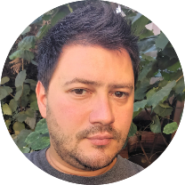

|  |
Adrian CezarField Service Engineer, Antisel RO Experienced Customer Service Engineer with a demonstrated history of working in the information technology and services industry. Skilled in Customer Service, Medical and Laboratory Instruments, Banking IT Services/EFTPOS. Strong information technology professional with a Bachelor of Engineering (BEng) focused in Telematics and Electronics in Transport from Politehnica University of Bucharest interested in developing skills and knowledge about software solutions, web development and cloud computing. |
| Hardware | ⭐⭐⭐⭐⭐ |
| Web Development / HTML5 / CSS3 / JavaScript | ⭐⭐⭐ |
| Electronics | ⭐⭐⭐⭐ |
| Databases / MySQL / Oracle SQL | ⭐⭐⭐⭐ |
| AWS | ⭐⭐⭐ |
| Linux | ⭐⭐⭐ |